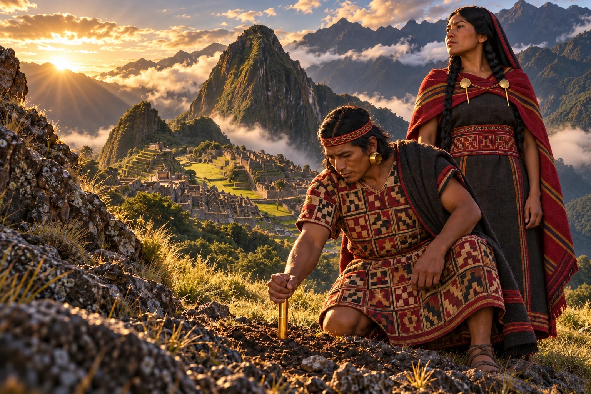
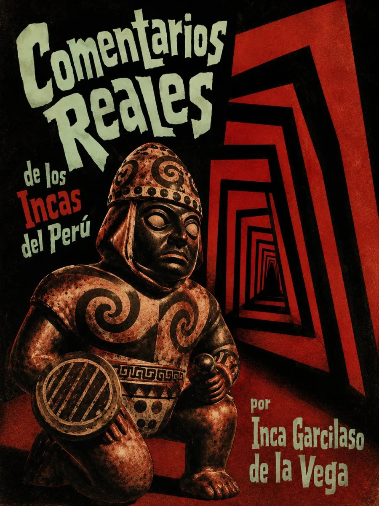

Audiolibros · Segunda Ola
Inca Garcilaso de la Vega · Primera parte: 1609
Comentarios reales
de los incas
Donde la tierra recibe el oro.
Una señal funda una ciudad.
La memoria vuelve a darle voz.

Escuchar la memoria de un mundo.
Grabación próximamente
Volumen

El origen contado desde la memoria
Publicada en Lisboa en 1609, la primera parte de los Comentarios Reales reconstruye los orígenes, el gobierno, las creencias y las prácticas del mundo inca. Garcilaso convierte la memoria familiar y su conocimiento del quechua en argumentos de autoridad: explicar una palabra, discutir una traducción o corregir a otro cronista son también maneras de disputar quién puede contar esa historia.
Su escritura articula herencia inca, formación cristiana y cultura letrada europea. Es una reconstrucción situada del pasado, cuya defensa de los incas exige atender tanto a las memorias que conserva como a las jerarquías que reproduce. La narración de la conquista y las guerras civiles corresponde a la continuación póstuma, publicada en 1617 como Historia general del Perú.
Traducir una palabra también puede ser una forma de defender un mundo.
La escena interpreta el relato fundacional del libro primero, capítulo XVI: en Huanacauri, la barra de oro se hunde en la tierra y señala el lugar desde el que Manco Cápac y Mama Ocllo convocarán a las gentes. La imagen reúne simbólicamente a los fundadores con Machu Picchu: el paisaje no corresponde al lugar del episodio narrado. Es una composición artística inspirada en el mito transmitido por Garcilaso; los rostros son imaginados y las vestiduras se inspiran en piezas incas conservadas en museos, posteriores al tiempo mítico de los fundadores.
Primera parte: Lisboa, 1609. Referencia bibliográfica · Instituto Cervantes. Libro I, capítulo XVI · Fundación del Cozco.
Referencias visuales: Túnica de t’oqapu · Dumbarton Oaks; Figura masculina y orejeras · The Met; Vestiduras femeninas · The Met; Tupu · The Met.
La lectura
Lectura completa
Grabación próximamente. La lectura de la obra estará disponible aquí. Las grabaciones se incorporarán cuando estén preparadas.
Valoración

Excelente